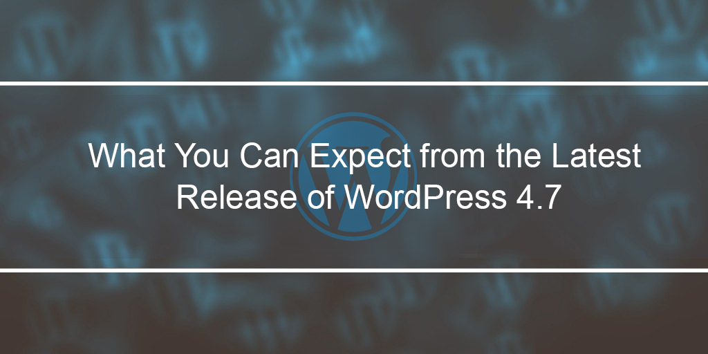

<?xml version="1.0" encoding="UTF-8"?><rss version="2.0"
	xmlns:content="http://purl.org/rss/1.0/modules/content/"
	xmlns:wfw="http://wellformedweb.org/CommentAPI/"
	xmlns:dc="http://purl.org/dc/elements/1.1/"
	xmlns:atom="http://www.w3.org/2005/Atom"
	xmlns:sy="http://purl.org/rss/1.0/modules/syndication/"
	xmlns:slash="http://purl.org/rss/1.0/modules/slash/"
	>

<channel>
	<title>WordPress 4.7 &#8211; Blog</title>
	<atom:link href="https://www.ehorizon.ae/blog/tag/wordpress-4-7/feed/" rel="self" type="application/rss+xml" />
	<link>https://www.ehorizon.ae/blog</link>
	<description></description>
	<lastBuildDate>Thu, 01 Mar 2018 05:29:32 +0000</lastBuildDate>
	<language>en-US</language>
	<sy:updatePeriod>hourly</sy:updatePeriod>
	<sy:updateFrequency>1</sy:updateFrequency>
	<generator>https://wordpress.org/?v=4.4.15</generator>
	<item>
		<title>What You Can Expect from the Latest Release of WordPress 4.7</title>
		<link>https://www.ehorizon.ae/blog/2016/12/15/what-you-can-expect-from-the-latest-release-of-wordpress-4-7/</link>
		<comments>https://www.ehorizon.ae/blog/2016/12/15/what-you-can-expect-from-the-latest-release-of-wordpress-4-7/#respond</comments>
		<pubDate>Thu, 15 Dec 2016 06:22:28 +0000</pubDate>
		<dc:creator><![CDATA[eHorizon]]></dc:creator>
				<category><![CDATA[Search Engine Optimization]]></category>
		<category><![CDATA[WordPress 4.7]]></category>

		<guid isPermaLink="false">https://www.ehorizon.ae/blog/?p=156</guid>
		<description><![CDATA[<p>WordPress has surely made our lives easier. Designing and developing websites, managing content and creating design layouts couldn’t have become more convenient and easy as it is with WordPress. And with the latest update of WordPress making its way into the market now, there is undoubtedly a multitude of exciting features to look out for. [&#8230;]</p>
<p>The post <a rel="nofollow" href="../../../2016/12/15/what-you-can-expect-from-the-latest-release-of-wordpress-4-7/index.html">What You Can Expect from the Latest Release of WordPress 4.7</a> appeared first on <a rel="nofollow" href="../../../index.html">Blog</a>.</p>
]]></description>
				<content:encoded><![CDATA[<p style="text-align: justify;">WordPress has surely made our lives easier. Designing and developing websites, managing content and creating design layouts couldn’t have become more convenient and easy as it is with WordPress. And with the latest update of WordPress making its way into the market now, there is undoubtedly a multitude of exciting features to look out for.</p>
<p style="text-align: justify;">There are a lot of ways in which you can play around with the latest WordPress 4.7 version. However, to make good use of it, better gear up for the core functionalities of the software before you can actually start using it. With WordPress 4.7 being around the corner, there are quite some appealing features that the software has to offer that can turn your experience far more adventurous than you would expect.</p>
<p style="text-align: justify;">Here are some features that you can expect with the release of WordPress 4.7 that will definitely make you more eager to use the software than ever.</p>
<p style="text-align: justify;"><strong>Introduction of New Theme with Better Features</strong></p>
<p style="text-align: justify;">Every new release of WordPress brings along an introduction of a newer theme with better features and qualities. And with WordPress 4.7, expect Twenty Seventeen to offer websites with a more distinguished and enterprise-level look. The new theme focuses more on business websites than just emphasizing on blogs and content pages. With large features images, sharper fonts, and mobile-first scheme design, websites can naturally be made to look better, creative and distinct with the Twenty Seventeen theme. To make things even better, WordPress 4.7 will also come out with introductory packages that are purely exclusive with the latest release. Apart from creating websites, the latest release of WordPress is sure to give a unique edge to new<strong> <a href="../../../../wordpress-cms-development-services.html">websites developed for businesses</a></strong>.</p>
<p style="text-align: justify;"><strong>Now implement Video Headers</strong></p>
<p style="text-align: justify;">Unlike a thing of the past where you had to opt for premium themes to implement or use video headers, WordPress will now allow you to use video headers with the default theme of Twenty Seventeen. This feature is quite a creative and innovative step taken by WordPress and a quality that is indeed thought of being out-of-the-box as this will be the first default theme that would allow users to use video headers. You can host and implement videos from either YouTube or Vimeo URLs, and make websites more interactive and customer-friendly.</p>
<p style="text-align: justify;"><strong>Custom CSS and Live Previews</strong></p>
<p style="text-align: justify;">Making changes to websites has always been a daunting task for designers. However, WordPress 4.7 will allow you to do the same thing now with greater ease and convenience. With custom CSS and live preview functionality, you can make changes to websites easily and immediately see those changes taking effect in the live preview section. You can assess the appearance and quality of the changes before you implement the same for your website. Users can save themselves some time and effort of creating child themes or separate child editors, and instead just use the live preview section and see the changes come live as soon as they make it.</p>
<p style="text-align: justify;"></p>
<p style="text-align: justify;"><strong>User Admin Languages</strong></p>
<p style="text-align: justify;">WordPress 4.7 has now gone international and it is now internationally accessible with the creation of various user admin languages. Before the 4.7 version of WordPress, users could only have the admin in one language, and this certainly was a barrier considering the global reach of WordPress and the number of people using WordPress from all over the world.</p>
<p style="text-align: justify;">Now international businesses have a great advantage as they can pick a language in their profile instead of sticking to one standard admin language as it were in the past. This way, the software has become more and more accessible and expanded their reach to a much larger section of people from across the globe.</p>
<p style="text-align: justify;"><strong>Enhanced User Interface</strong></p>
<p style="text-align: justify;">Features pertaining to user interface have always been a delight on WordPress. However, with WordPress 4.7, there is much more that you can look forward to.</p>
<ul style="text-align: justify;">
<li>WordPress now allows a better and more streamlined way of searching and using themes for websites. Theme setup and installation flows are improved for users to view different themes and use the same in a much-streamlined You can also use the customized feature to install and setup themes directly.</li>
<li>With the feature of images and docs thumbnail preview, the PDF preview was quite a desired feature amongst many users till date, and the desire has finally been fulfilled by WordPress 4.7. You can now have thumbnail preview for PDF files as well, which stands as a great advantage for users who have been feeling the need and requirement for the same.</li>
<li>For better user experience, the WordPress post editor has undergone some changes as well. New introductions in the post editor are keyboard shortcuts in tooltips and drop-down menus to make user-friendly websites that can possess better interface and enhanced user features.</li>
</ul>
<p style="text-align: justify;"><strong>Technical Improvements</strong></p>
<ul style="text-align: justify;">
<li>A lot of effort has gone into improving the backend support of WordPress as well. There have been new additions to WordPress 4.7 to enhance its technical performance and capability. Users can now add a list of actions or bulk actions to the list tables. This allows users to improve their websites with multiple features at the same time, making things much quicker than before.</li>
<li>The latest version of WordPress supports different post templates exactly like custom page templates. Users can take advantage of this feature for managing content posts and websites.</li>
<li>REST API Content Endpoints: To improve user interface further, WordPress now includes a content merge feature with the introduction of the REST API framework. The content endpoints of this framework include access to posts, comments, terms, users, and settings data and these are some long-awaited new features that will be supported by the content merge.</li>
</ul>
<p style="text-align: justify;">Overall, the WordPress 4.7 can improve and bring about quite an improvement in how users design and manage websites and content in their routine lives. This drive of change by the latest version of WordPress is certainly a no exception and one of the most enriching changes to WordPress you will look forward to.</p>
<p>The post <a rel="nofollow" href="../../../2016/12/15/what-you-can-expect-from-the-latest-release-of-wordpress-4-7/index.html">What You Can Expect from the Latest Release of WordPress 4.7</a> appeared first on <a rel="nofollow" href="../../../index.html">Blog</a>.</p>
]]></content:encoded>
			<wfw:commentRss>https://www.ehorizon.ae/blog/2016/12/15/what-you-can-expect-from-the-latest-release-of-wordpress-4-7/feed/</wfw:commentRss>
		<slash:comments>0</slash:comments>
		</item>
	</channel>
</rss>

<!-- Localized -->